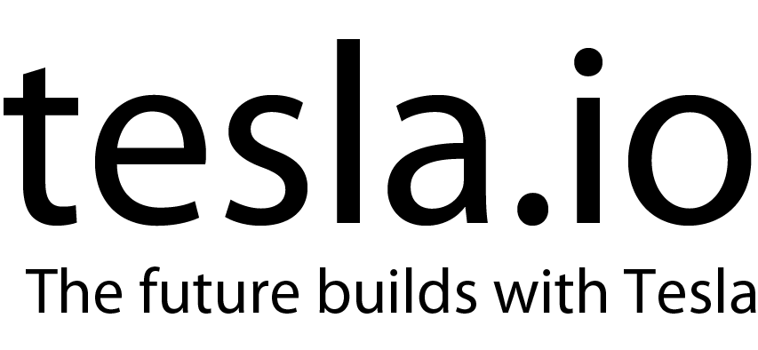
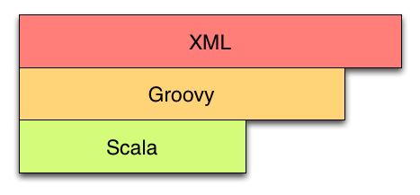
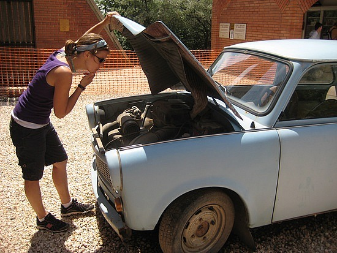

Tesla Polyglot Scala
Who uses Maven? Who uses sbt? Who uses something else?
Who am I
Christopher Hunt
@huntchr
Developer for 30 years. Used many languages including COBOL! Committer on Play, author of Maven JavaScript Tools, JS Test Runner and other things.
typesafe.com
Build Reactive Apps on the JVM!
typesafe.com
Scala, Akka, Play Caretakers of Scala Martin Odersky Jonas Boner
Reactive
Event driven, scalable, resilient, interactive

http://www.reactivemanifesto.org/
- Resilient - recover and repair itself automatically for seamless business continuity - Interactive - rich & engaging, providing instant feedback based on user interactions - Scalable - predictably & elastically scalable; On-demand across cores, nodes and clusters - Event-Driven - processes messages in parallel, asynchronously without blocking, lock free
Tesla
Goal: next generation delivery
infrastructure for the JVM
- Jason Van Zyl - create Maven - Tesla is beyond just building - CI - build avoidance - CD - Provisioning & software delivery - Polyglot
Tesla Polyglot
Atom (Google Blaze)
Clojure
Groovy
Ruby
Scala
Yaml
- Maven's core is not, and never has been, tied to XML. - It's just a front-end format and really anything is possible - Think of the xml as the object code - translations available
- a stepping stone toward sbt - existing Maven/Scala experience poor - shouldn't *have* to use sbt - should want to - we still believe that sbt is the best tool for building Scala - embrace existing knowledge
Tesla Polyglot - XML
<?xml version="1.0" encoding="UTF-8"?>
<project xmlns="http://maven.apache.org/POM/4.0.0" xmlns:xsi="http://www.w3.org/2001/XMLSchema-instance"
xsi:schemaLocation="http://maven.apache.org/POM/4.0.0 http://maven.apache.org/xsd/maven-4.0.0.xsd">
<modelVersion>4.0.0</modelVersion>
<parent>
<groupId>io.tesla.polyglot</groupId>
<artifactId>tesla-polyglot</artifactId>
<version>0.0.1-SNAPSHOT</version>
</parent>
<artifactId>tesla-polyglot-scala</artifactId>
<name>Polyglot Tesla :: Scala</name>
<contributors>
<contributor>
<name>Christopher Hunt</name>
<organization>Typesafe</organization>
<organizationUrl>http://typesafe.com</organizationUrl>
</contributor>
</contributors>
<dependencies>
<dependency>
<groupId>io.tesla.polyglot</groupId>
<artifactId>tesla-polyglot-common</artifactId>
<version>0.0.1-SNAPSHOT</version>
</dependency>
<dependency>
<groupId>com.twitter</groupId>
<artifactId>util-eval</artifactId>
<version>6.3.7</version>
</dependency>
<dependency>
<groupId>com.googlecode.kiama</groupId>
<artifactId>kiama_2.9.2</artifactId>
<version>1.4.0</version>
</dependency>
<dependency>
<groupId>org.scala-lang</groupId>
<artifactId>scala-library</artifactId>
<version>2.9.3</version>
</dependency>
<dependency>
<groupId>org.specs2</groupId>
<artifactId>specs2_2.9.3</artifactId>
<version>1.12.4.1</version>
<scope>test</scope>
</dependency>
<dependency>
<groupId>junit</groupId>
<artifactId>junit</artifactId>
<scope>test</scope>
</dependency>
</dependencies>
Tesla Polyglot - Groovy
project {
modelVersion '4.0.0'
parent {
groupId 'io.tesla.polyglot'
artifactId 'tesla-polyglot'
version '0.0.1-SNAPSHOT'
}
artifactId 'tesla-polyglot-scala'
name 'Polyglot Tesla :: Scala'
contributors {
contributor {
name 'Christopher Hunt'
organization 'Typesafe'
organizationUrl 'http://typesafe.com'
}
}
dependencies {
dependency {
groupId 'io.tesla.polyglot'
artifactId 'tesla-polyglot-common'
version '0.0.1-SNAPSHOT'
}
dependency {
groupId 'com.twitter'
artifactId 'util-eval'
version '6.3.7'
}
dependency {
groupId 'com.googlecode.kiama'
artifactId 'kiama_2.9.2'
version '1.4.0'
}
dependency {
groupId 'org.scala-lang'
artifactId 'scala-library'
version '2.9.3'
}
dependency {
groupId 'org.specs2'
artifactId 'specs2_2.9.3'
version '1.12.4.1'
scope 'test'
}
dependency {
groupId 'junit'
artifactId 'junit'
scope 'test'
}
}
Tesla Polyglot
POM LOC Comparisons

Tesla Polyglot - Scala
import org.sonatype.maven.polyglot.scala.model._
Model(
"" % "tesla-polyglot-scala",
modelVersion = "4.0.0",
parent = Parent("io.tesla.polyglot" % "tesla-polyglot" % "0.0.1-SNAPSHOT"),
name = "Polyglot Tesla :: Scala",
contributors = Seq(
Contributor(
name = "Christopher Hunt",
organization = "Typesafe",
organizationUrl = "http://typesafe.com"
)
),
dependencies = Seq(
Dependency("io.tesla.polyglot" % "tesla-polyglot-common" % "0.0.1-SNAPSHOT"),
Dependency("com.twitter" % "util-eval" % "6.3.7"),
Dependency("com.googlecode.kiama" % "kiama_2.9.2" % "1.4.0"),
Dependency("org.scala-lang" % "scala-library" % "2.9.3"),
Dependency("org.specs2" % "specs2_2.9.3" % "1.12.4.1", scope = "test"),
Dependency("junit" % "junit", scope = "test")
),
- named parameters - default args - functional - full Scala - not really a DSL - just a set of domain objects - scope for improvement - shorthand for dependencies
Under the Hood
- everything translates to a Maven Model - Java POJOs - pom.xml has precedence over pom.scala etc. - scala classes are cached in the target folder to minimise the need for compilation - similar to sbt in this regard
Soon... inlined Plugins
Model(
"io.tesla.polyglot" % "tesla-polyglot" % "0.0.1-SNAPSHOT",
Build(
tasks = Seq(
Task("hello", "validate") {
p =>
println("hello, I am Scala inside Maven.")
}
)
)
)
- id, phase, block with project passed in - #1 complaint about Maven
Next Steps
christopher hunt software@huntchr
- finish domain model (almost done) - release tesla-polyglot (waiting on me mainly) - may be use sbt eval - or externalise that - inline plugins